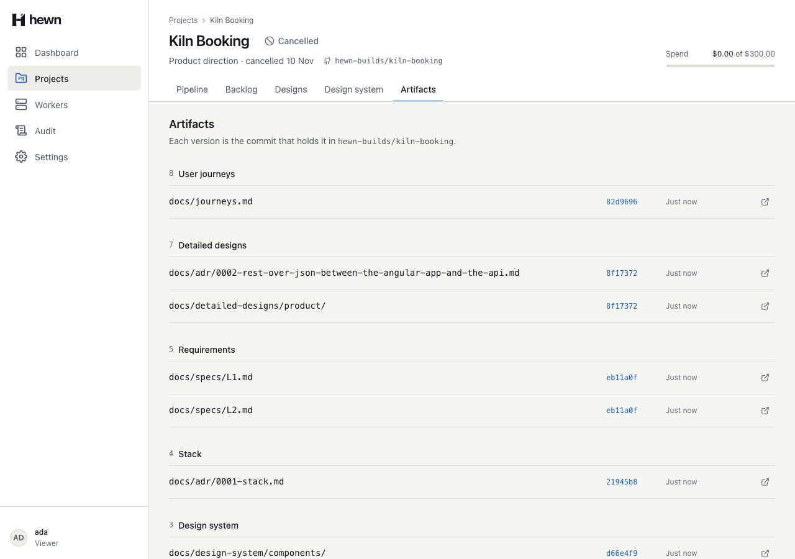
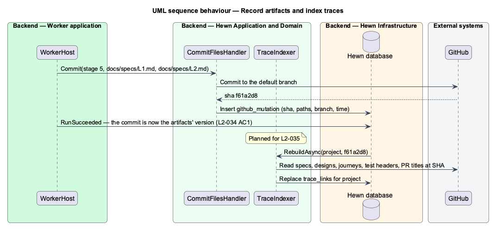
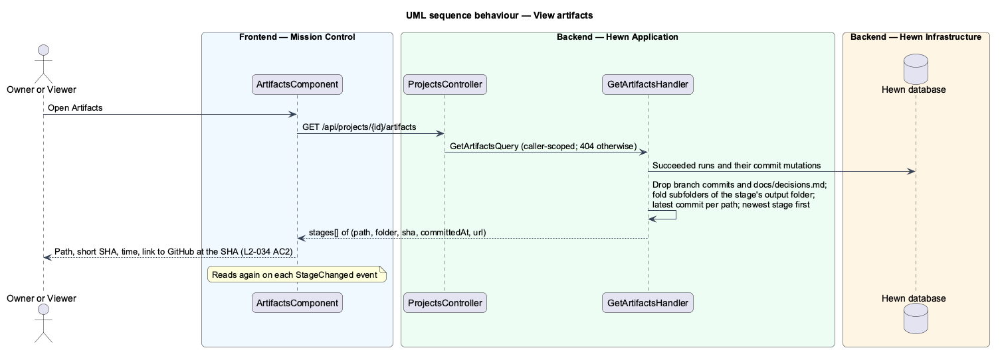
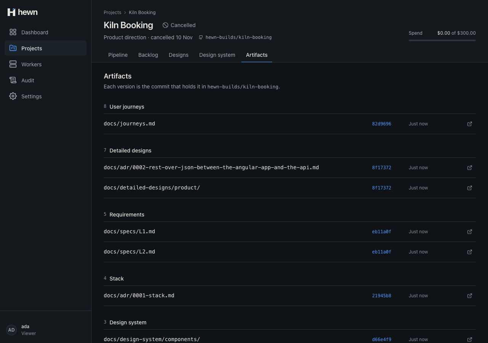
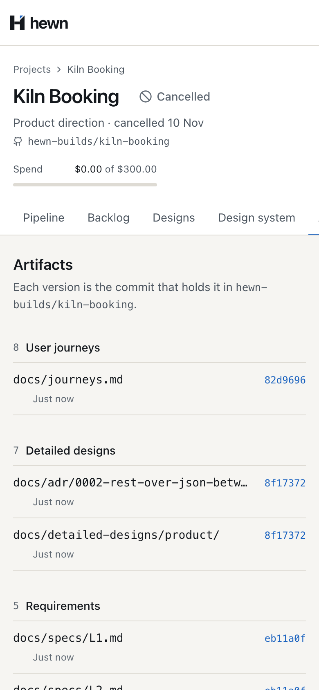
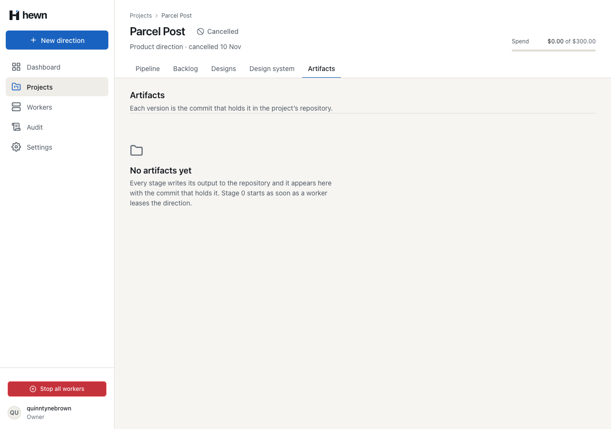
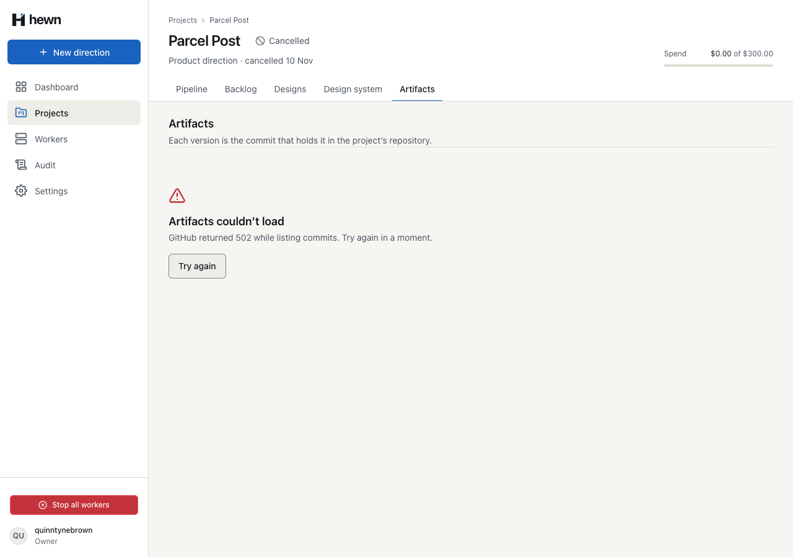

Every stage's output, at the exact commit that holds it.



var runs = await db.Runs.AsNoTracking()
.Where(r => r.ProjectId == query.ProjectId && r.Status == RunStatus.Succeeded)
.Select(r => new { r.Id, r.Stage })
.ToListAsync(cancellationToken);
var stageOf = runs.ToDictionary(r => r.Id, r => r.Stage);
var runIds = stageOf.Keys.ToList();
var commits = await db.GitHubMutations.AsNoTracking()
.Where(m => runIds.Contains(m.RunId) && m.Kind == "commit")
.ToListAsync(cancellationToken);
var stages = commits
.Select(m => (Stage: stageOf[m.RunId], m.CreatedAt, Commit: Read(m.Result)))
.Where(c => c.Commit.Branch is null)
.SelectMany(c => c.Commit.Paths
.Where(path => path != CommitPolicy.DecisionLog)
.Select(path => Fold(c.Stage, path))
/// <summary><c>docs/mocks/statements/default.html</c> folds into <c>docs/mocks/statements/</c>; <c>docs/mocks/manifest.json</c> stays.</summary>
private static (string Path, bool Folder) Fold(int stage, string path)
{
foreach (var root in CommitPolicy.OutputFolders(stage))
{
if (path.StartsWith(root, StringComparison.Ordinal))
{
var slash = path.IndexOf('/', root.Length);
if (slash > root.Length)
{
return (path[..(slash + 1)], true);
}
}
}
{
"repository": "hewn-builds/kiln-booking",
"stages": [
{
"stage": 1,
"name": "Idea",
"artifacts": [
{
"path": "docs/brief.md",
"folder": false,
"sha": "2fe62b5239bf13a00329d937e0cacf36518d56aa",
"committedAt": "2026-11-10T08:32:34.893647+00:00",
"url": "https://github.com/hewn-builds/kiln-booking/blob/2fe62b5239bf13a00329d937e0cacf36518d56aa/docs/brief.md"
}
]
}
]
}
@for (a of stage.artifacts; track a.path) {
<li class="file">
<span class="file__path"
><span class="truncate">{{ a.path }}</span></span
><span class="file__sha">{{ shortSha(a.sha) }}</span
><span class="file__when">{{ when(a.committedAt) }}</span>
@if (a.url) {
<a
class="file__open"
[href]="a.url"
target="_blank"
rel="noopener"
[attr.aria-label]="openLabel(a.path, a.sha)"
><svg hw-icon name="externalLink" class="icon--sm"></svg
></a>
}
/** "Just now", "14 min ago" within the hour, then "8 Nov, 16:44", as the Artifacts mock shows commit times. */
export function committedText(at: string, now: Date = new Date()): string {
const when = new Date(at);
const minutes = Math.floor((now.getTime() - when.getTime()) / 60_000);
if (minutes < 1) return 'Just now';
if (minutes < 60) return `${minutes} min ago`;
const time = `${String(when.getHours()).padStart(2, '0')}:${String(when.getMinutes()).padStart(2, '0')}`;
return `${when.getDate()} ${MONTHS[when.getMonth()]}, ${time}`;
}
export function openLabel(path: string, sha: string): string {
return `Open ${path} on GitHub at ${shortSha(sha)}`;
}
[Fact]
public async Task Only_a_run_that_succeeded_versions_its_files_and_a_retry_s_commit_is_the_version()
{
var (owner, projectId) = await SubmitAsync();
var worker = await _factory.RegisterWorkerAsync();
var first = await LeaseStageAsync(worker, 1);
await CommitAsync(worker, first, "2", ["docs/brief.md"]);
Assert.DoesNotContain((await ArtifactsAsync(owner, projectId)).GetProperty("stages").EnumerateArray(), s => s.GetProperty("stage").GetInt32() == 1);
(await worker.FailAsync(first, "The brief left out the audience")).EnsureSuccessStatusCode();
_factory.Clock.Advance(TimeSpan.FromMinutes(10));
var retry = (await worker.LeaseAsync())!;
Assert.Equal(1, retry.Stage);
var second = await CommitAsync(worker, retry, "2", ["docs/brief.md"]);
(await worker.SucceedAsync(retry)).EnsureSuccessStatusCode();
await expect(artifacts.empty).toBeVisible();
await page.evaluate(() => ((window as unknown as { loadMark: number }).loadMark = 1));
stopWorkers = startWorkers(1, 150);
// Stage 1 commits the brief; its version is the commit, and the link opens the file at that commit.
const brief = artifacts.row('Idea', 'docs/brief.md');
await expect(brief.sha).toHaveText(/^[0-9a-f]{7}$/, { timeout: 120_000 });
const sha = (await brief.sha.innerText()).trim();
const repo = `hewn-builds/${name.toLowerCase().replace(/[^a-z0-9]+/g, '-')}`;
await expect(brief.open).toHaveAttribute(
'href',
new RegExp(`^https://github\\.com/${repo}/blob/${sha}[0-9a-f]{33}/docs/brief\\.md$`),
);
4 new, through the real API and worker endpoints
short SHA, commit time, link name
3 behaviour, 1 live, 3 visual, 4 a11y



